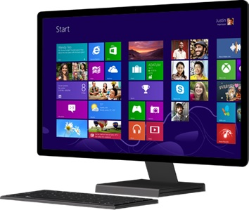
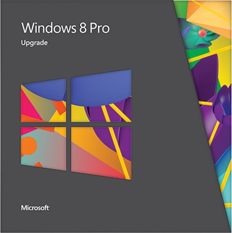

Windows 8 adalah sistem operasi konsep ulang, dari chipset untuk pengalaman pengguna, dan memperkenalkan antarmuka yang sama sekali baru yang bekerja dengan lancar untuk kedua sentuh dan mouse dan keyboard. Ini berfungsi baik sebagai tablet untuk hiburan dan PC dengan fitur lengkap untuk menyelesaikan sesuatu. Windows 8 juga mencakup perangkat tambahan dari desktop Windows akrab, dengan taskbar baru dan manajemen file yang efisien. Windows 8 memiliki fitur layar Mulai dengan ubin yang terhubung ke orang, file, aplikasi, dan situs web. Apps depan dan tengah, dengan akses ke tempat baru untuk mendapatkan aplikasi-Windows Store dibangun tepat di untuk layar Start. Seiring dengan Windows 8, Microsoft juga meluncurkan Windows RT, yang berjalan pada beberapa tablet dan PC. Windows RT dirancang untuk perangkat ramping dan baterai yang tahan lama, dan secara eksklusif menjalankan aplikasi dari Windows Store. Hal ini juga dilengkapi dengan versi built-in Office yang dioptimalkan untuk layar sentuh.
Geek trivia: Power pengguna pemberitahuan bahwa Windows 8 membuat deteksi dan koreksi kesalahan sistem file baik lebih transparan dan kurang intrusif.
Berikut ini adalah gambar dari windows 8 :

